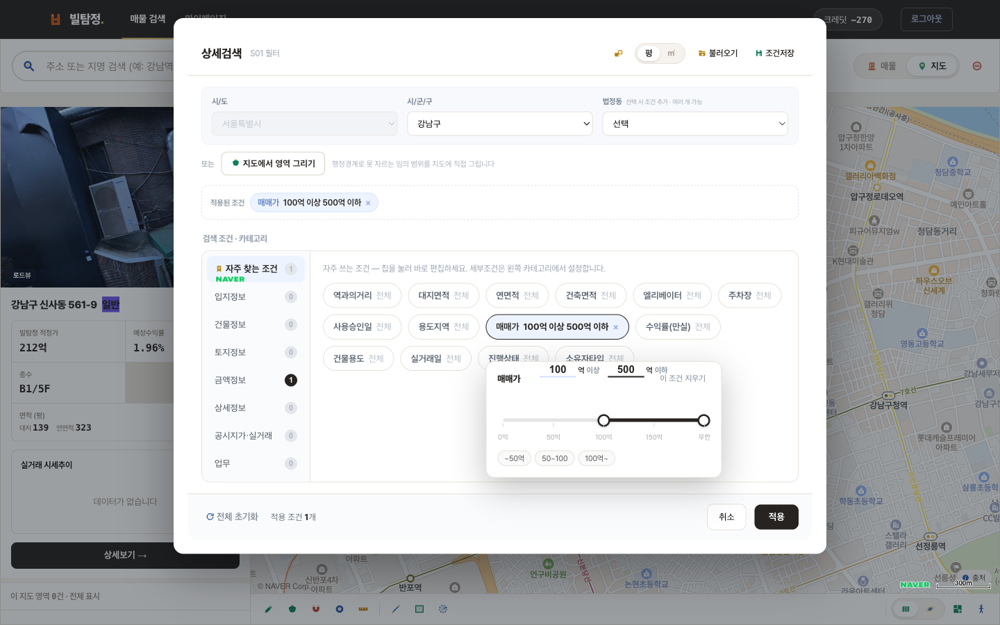
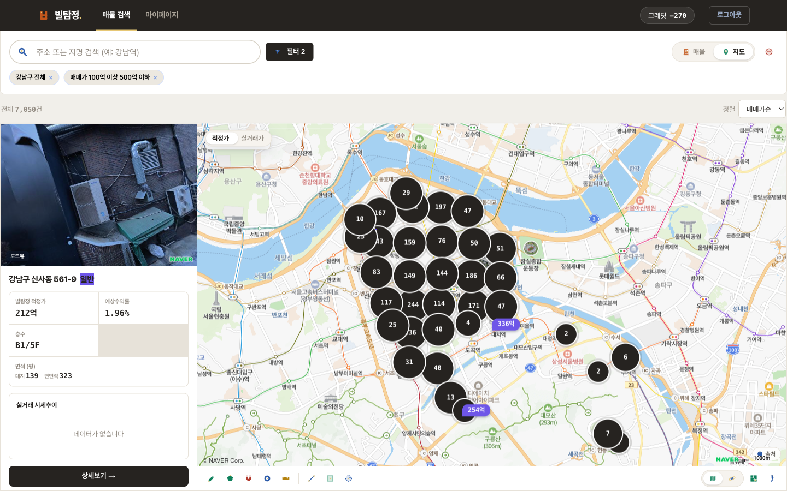
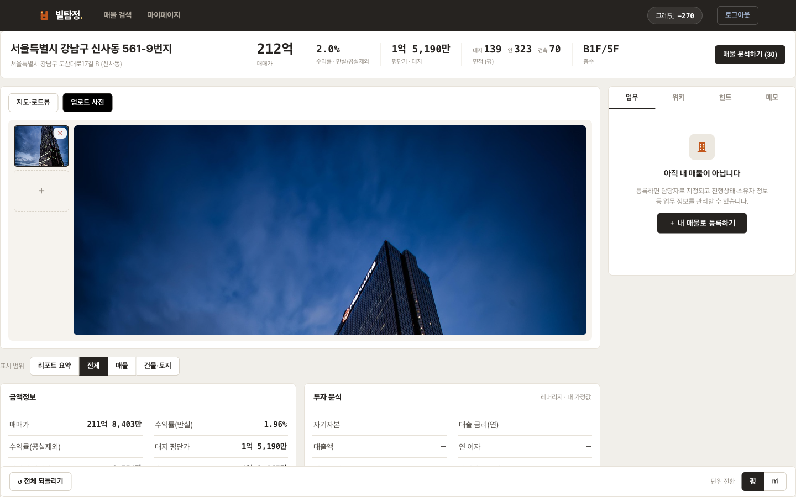
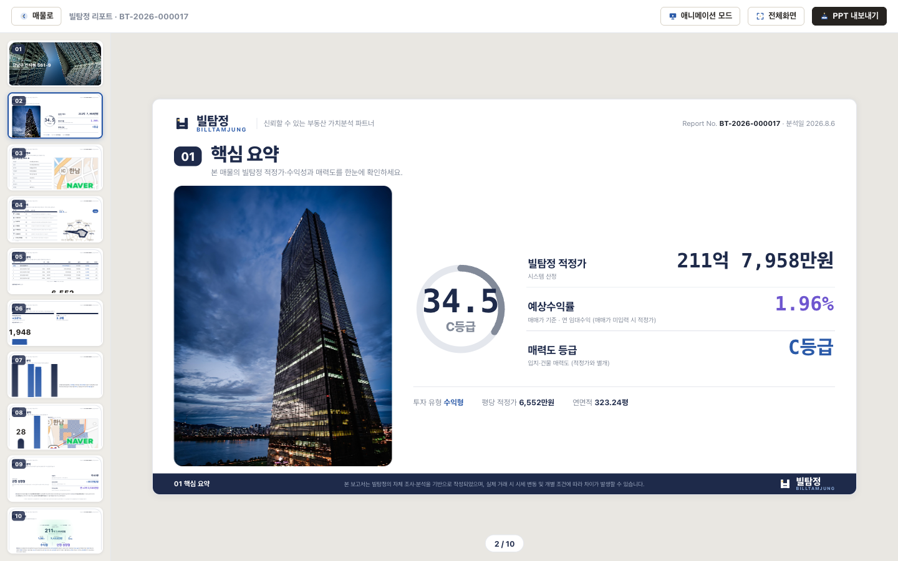

빌탐정.
사용 매뉴얼
건물 하나를 찾아 분석하고 고객용 리포트까지 —
실제 화면으로 따라가는 30분 안내서
01
빌탐정은 무엇을 하는 도구인가
부동산 플랫폼은 매물로 나온 건물을 보여줍니다. 빌탐정은 서울의 모든 상업용 건물에서 출발합니다.
아직 시장에 나오지 않은 건물도 조건으로 찾아내고, 가치를 분석하고, 고객에게 건넬 리포트까지 만듭니다.
① 찾는다→
② 파악한다→
③ 근거를 다듬는다→
④ 리포트를 만든다
이 매뉴얼은 실제 건물 한 채 — 강남구 신사동 561-9(도산대로, 적정가 212억) — 를 처음부터 끝까지 따라가며
네 단계를 설명합니다. 화면은 모두 실제 캡처입니다.
알아두면 편한 세 가지
| 규칙 | 내용 |
|---|
| 검색은 무제한 | 검색·상세 조회·분석 검토는 크레딧을 쓰지 않습니다. 크레딧은 리포트 생성(30)에만 차감되며, 가입 시 60(리포트 2건)이 지급됩니다. |
| 원본은 안전 | 화면의 어떤 값이든 직접 수정할 수 있고, 그 수정은 우리 팀에게만 보입니다. 공공데이터 원본은 훼손되지 않고 언제든 되돌릴 수 있습니다. |
| 팀 단위 공유 | 수정한 정보·층별 임대·상권 설정·사진·업무 메모는 팀원 전체가 함께 봅니다. 크레딧과 리포트는 개인 소유입니다. |
이 매뉴얼의 범위
자주 쓰는 핵심 기능 위주로 설명합니다. 위키·비밀메모·내 매물 등록·팀 초대 같은 부가 기능은
화면에서 직관적으로 쓸 수 있어 여기서는 다루지 않습니다.
02
① 찾는다
매물 검색
주소를 알고 있다면 검색창에, 조건만 있다면 필터로 — 두 갈래 모두 같은 결과 화면으로 이어집니다.
주소로 바로 찾기

검색창에 신사동 561-9를 입력하면 자동완성이 뜹니다. 건물을 선택하면 지도가 이동하고 왼쪽에 요약 카드가 나타납니다 — 상세보기를 누르면 새 탭에서 상세 화면이 열립니다.
검색 팁 — 주소(신사동 561-9), 건물명, 역 이름(강남역) 모두 인식합니다. 띄어쓰기는 없어도 됩니다.
언제 검색창을 쓰고, 언제 필터를 쓰나
검색창은 이미 아는 건물을 열 때, 필터는 조건에 맞는 건물을 발굴할 때 씁니다.
실무에서는 필터로 후보를 좁힌 뒤 하나씩 상세를 여는 흐름이 많습니다.
02
① 찾는다 — 조건으로 발굴하기

상단 필터 버튼 → 지역(시/군/구)을 고르고 조건을 지정합니다. 위 화면은 매매가 100억~500억을 입력하는 모습.
슬라이더로 끌어도 되고, 숫자를 직접 입력하면 슬라이더 범위 밖의 값(예: 800억)도 지정할 수 있습니다.

조건에 맞는 건물이 지도에 핀으로, 왼쪽에 목록으로 나옵니다. 핀의 숫자는 그 구역의 건물 수(확대하면 개별 핀으로 나뉨),
금액 핀은 개별 건물의 적정가입니다. 지도 위 적정가 / 실거래가 토글로 표시 기준을 바꿀 수 있습니다.
02
① 찾는다 — 조건 목록과 도구
조건은 60여 가지
| 분류 | 주요 조건 |
|---|
| 금액 | 매매가 · 수익률 · 평단가(대지/연면적) · 보증금 · 임대료 |
| 건물 | 대지/연면적 · 층수 · 사용승인일(연식) · 엘리베이터 · 주차 · 건폐율/용적률과 그 여유분 |
| 입지 | 역과의 거리 · 용도지역 · 도로접면 · 지형 · 유동인구 |
| 이력 | 공시지가와 상승률 · 실거래가 · 실거래 시점 · 거래 횟수 |
지도에 직접 그리기
행정경계로 자를 수 없는 범위는 지도에 직접 그립니다. 필터 화면의 지도에서 영역 그리기 또는 지도 하단 도구 —
자유곡선·다각형·원, 그리고 필지 경계에 자동으로 붙는 자석 올가미까지 제공합니다.
조건 저장 — 자주 쓰는 조합은 필터 화면 우측 상단 조건저장으로 이름을 붙여 보관하고,
다음에 불러오기로 즉시 재적용합니다.
결과 목록 읽기
| 항목 | 설명 |
|---|
| 내 매물 / 일반 | 팀이 담당자를 지정한 건물은 내 매물 열로 따로 모입니다. 나머지는 일반 열. |
| 정렬 | 매매가순 · 수익률순. 값이 없는 건물은 뒤로 밀립니다. |
| 카드의 가격 | 팀이 매매가를 적어두지 않았다면 빌탐정 적정가가 대신 표시됩니다. |
| 지도 도구 | 하단 아이콘 — 거리재기 · 면적 · 반경 · 지적도 · 위성 · 로드뷰. 검색과 무관하게 언제든 사용합니다. |
실무 흐름 예시
① 관심 지역(구·동)을 고르고 ② 매매가와 수익률로 후보를 좁힌 뒤 ③ 지도에서 위치를 눈으로 확인하고
④ 마음에 드는 건물의 상세를 열어 분석합니다. 조건은 저장해두고 매주 다시 돌려보면 새로 잡히는 건물이 보입니다.
03
② 파악한다
매물 상세
건물 하나의 모든 정보가 한 화면에 있습니다. 상단 표시 범위로 보고 싶은 만큼만 골라 봅니다 —
리포트 요약 / 전체 / 매물 / 건물·토지.

리포트 요약은 이 건물의 결론만 모은 화면입니다. 적정가·예상수익률·매력도 등급·투자 유형·미래가치를
한 장에서 확인할 수 있어, 고객 앞에서 바로 열어 보여주기 좋습니다.
먼저 봐야 할 네 가지
| 지표 | 읽는 법 |
|---|
| 빌탐정 적정가 | 주변 실거래를 토지가치와 건물가치로 나눠 비교하고, 연식·거래시점·규모 차이를 보정해 산출한 지금 팔린다면 얼마. 상업·업무용 건물에만 제공됩니다. |
| 예상수익률 | 연 임대수익 ÷ 매매가. 임대료를 직접 입력하지 않았다면 추정치 기반이므로 참고용으로 보세요. |
| 매력도 등급 | 도로접면·역거리·용도지역·연식 등 8개 축을 종합한 S~D 등급. |
| 투자 유형 | 신축용 / 리모델링용 / 수익형 중 이 건물에 맞는 활용 방향. 사옥 적합 여부도 함께 표시됩니다. |
가격은 세 층으로 기록됩니다 — 매도희망가(건물주가 부르는 값) · 매매가(중개인 판단) · 빌탐정 적정가(시스템 산출).
세 값을 따로 적어두면 협의 여지가 한눈에 보입니다.
03
② 파악한다 — 상권 정하기
적정가와 주변시세는 "주변"의 범위에 따라 달라집니다. 기본값은 반경 500m이지만,
실제 상권은 도로 하나로 갈리기도 하죠. 직접 그리면 그 범위로 다시 계산됩니다.

지도 오른쪽 위 주변상권 정의하기 → 원의 가장자리를 끌면 반경이, 가운데 점을 끌면 위치가 바뀝니다.
좌측 상단 도구로 자유곡선 그리기도 가능합니다. 완료를 누르면 저장되고 팀 전체에 적용됩니다.

정한 범위 안의 주변 임대시세(층별 평당 보증금·임대료)와 주변 실거래 목록이 자동으로 갱신됩니다.
주소를 클릭하면 그 건물 상세로 이동합니다.
임대료를 직접 입력하면
상세 화면의 층별 임대 항목에 실제 보증금·임대료·공실을 입력하면, 그 순간부터 수익률이 추정이 아닌 실측으로 계산됩니다.
입력한 값은 팀이 공유합니다.
04
③ 근거를 다듬는다
사진 · 정보 수정
현장 사진 올리기

지도 위 업로드 사진 탭 → + 를 눌러 사진을 추가합니다. 팀원 모두가 볼 수 있고,
첫 번째 사진은 리포트 표지에 사용됩니다. 리포트를 만들기 전에 대표 사진 한 장은 꼭 올려두세요.
잘못된 정보 고치기
대장 정보가 실제와 다를 때가 있습니다. 값을 클릭하면 바로 수정할 수 있고, 수정한 값은 우리 팀 화면에만 반영됩니다.
원본은 그대로 보존되며 전체 되돌리기로 언제든 복구할 수 있습니다.
수정이 반영되는 곳 — 고친 값은 적정가·수익률 등 계산에도 즉시 반영됩니다.
예를 들어 연면적을 바로잡으면 평단가와 적정가가 함께 다시 계산됩니다.
05
④ 리포트를 만든다
빌탐정 리포트
생성 버튼을 누르기 전에 근거를 직접 검토하는 단계가 있습니다. 이 화면에서 조정한 내용이 리포트에 그대로 반영됩니다.

상세 화면 우측 상단 매물 분석하기 → 검토 화면. 왼쪽은 주변 실거래 사례 목록, 오른쪽 위는 산출된 적정가·수익률입니다.
사례를 고른다성격이 다른 거래(예: 특수한 조건의 매각)는 체크를 해제합니다. 이상치 표시가 붙은 사례는 처음부터 제외되어 있습니다.
정보를 고친다사례의 행을 클릭하면 도로접면·용도지역·승인일 등을 그 자리에서 수정할 수 있습니다.
결과를 확인한다조정할 때마다 적정매매가가 즉시 다시 계산됩니다. 여기까지는 크레딧이 들지 않습니다.
생성한다생성 확정을 누르면 크레딧 30이 차감되고 리포트가 만들어집니다. 실패하면 차감되지 않습니다.
주변임대 적용 토글
"지금 임대가 아니라 주변 시세대로 맞춘다면?" 을 보고 싶을 때 켜세요. 켜면 수익률과 임대 표가 주변 시세 기준으로 바뀝니다.
기본은 꺼짐(현재 상태 기준)입니다.
05
④ 리포트를 만든다 — 결과물

생성이 끝나면 리포트 화면이 열립니다. 왼쪽은 페이지 목록, 오른쪽이 본문입니다.
표지에는 올려둔 사진과 리포트 번호가 들어갑니다.

10페이지 구성 — 핵심 요약 · 기본정보 · 매력도 · 가격분석 · 근거 사례 · 공시지가 · 임대현황 · 수익률 · 투자유형 · 미래가치.
상단 PPT 내보내기로 파일을 받아 고객에게 그대로 전달할 수 있습니다.
| 기능 | 설명 |
|---|
| 애니메이션 모드 | 발표용 — 페이지 요소가 순서대로 나타납니다. |
| 전체화면 | 미팅에서 화면 공유할 때 사용합니다. |
| PPT 내보내기 | 동일 내용의 파워포인트 파일을 내려받습니다. |
| 보관 | 만든 리포트는 마이페이지 › 내 산출물에 계속 남아 다시 열 수 있습니다. |
리포트는 만든 순간으로 고정됩니다 — 생성 시점의 데이터가 그대로 보존되므로,
나중에 시세가 변해도 그때 무엇을 근거로 제시했는지 남습니다. 최신 값이 필요하면 새로 생성하세요.
06
알아두면 좋은 것
숫자를 어떻게 읽을까
| 상황 | 해석 |
|---|
| 적정가가 실거래와 다르다 | 적정가는 주변 사례로 추정한 값이라 개별 사정(급매·특수관계·내부 상태)은 담지 못합니다. 검토 화면에서 어떤 사례로 계산됐는지 직접 확인하고 조정할 수 있습니다. |
| 수익률이 5%를 넘는다 | 서울 상업용 건물의 실제 수익률은 대체로 2~4%대입니다. 5% 이상이라면 임대료 추정이 실제보다 높게 잡혔을 가능성이 큽니다 — 층별 임대를 직접 입력하면 정확해집니다. |
| 적정가가 안 나온다 | 주거용 건물이거나, 주변에 비교할 거래가 3건 미만인 경우입니다. 상권 범위를 넓히면 사례가 늘어납니다. |
데이터는 언제 갱신되나
| 데이터 | 주기 |
|---|
| 실거래가 | 월 1회 |
| 건축물대장 · 임대 시세 | 분기 1회 |
| 공시지가 · 용도지역 등 공간정보 | 연 1~2회 |
베타 기간 안내
- 가입 시 크레딧 60이 지급되며, 리포트 2건을 만들 수 있습니다.
- 카카오 로그인은 심사 진행 중이라 현재는 이메일 가입만 가능합니다.
- 적정가는 상업·업무용 건물을 대상으로 하며, 주거용은 제공하지 않습니다.
의견을 들려주세요
베타 기간의 목표는 완성이 아니라 개선입니다. 불편했던 점, 기대와 달랐던 계산, 있었으면 하는 기능 —
무엇이든 설문이나 직접 연락으로 알려주시면 다음 버전에 반영합니다.